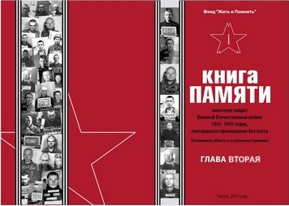
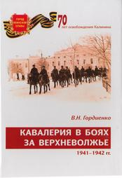
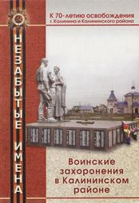

К 70-летию освобождения Калинина
НОВЫЕ КНИГИ О ВОЙНЕ
* * *
Еще в декабре 2008 г. Фондом «Жить и Помнить» была закончена подготовка к изданию «КНИГИ ПАМЯТИ советских солдат Великой Отечественной войны 1941 - 1945 годов, считавшихся пропавшими без вести (Калининская область в её довоенных границах)».
В ней более пяти тысяч имен наших земляков, не вернувшихся с фронтов Великой Отечественной войны.
Судьбы этих воинов на протяжении многих десятилетий оставались не известными, а их имена были увековечены в Книге памяти Тверской области как пропавших без вести. Отчаявшись дождаться поддержки властей в издании книги, Президентом Фонда Л.М. Мусиным было принято решение издавать ее самостоятельно, по главам, на собственные средства. В рамках подготовки к 70-летию освобождения г. Калинина было издано две главы Книги памяти (имена начинающиеся на буквы «А» и «Б»). В этих главах описание фронтовых судеб почти семисот воинов, уроженцев Калининской области, погибших в лагерях военнопленных, концлагерях, на полях сражений Великой Отечественной войны, тех, чьи останки были подняты бойцами поисковых отрядов.
В изданиях публикуются статьи двух известных исследователей Великой Отечественной войны С.А. Герасимовой «Власть и пропавшие без вести в годы Великой Отечественной войны 1941 – 1945 годов» и М.Д. Хетчикова «Живем в городе воинской славы и помним о ратном подвиге поколения победителей».
В январе текущего года мы разослали комплекты издания более чем в 200 адресов: музеи, библиотеки, администрации, советы ветеранов, школы области. И стали поступать звонки из разных районов о найденных родственниках. Будем благодарны всем, кто, получив наше издание, предпримет определенные действия по информированию населения о судьбах погибших земляков.
Возвращая судьбы, имена и подвиги, восстанавливая историческую справедливость, мы отдаем свой долг Памяти нашим отцам и дедам, подарившим нам жизнь. Поэтому издание глав Книги памяти в 2012 г. будем продолжать.
* * *
В книге кандидата военных наук, полковника в отставке Гордиенко Владимира Николаевича «Кавалерия в боях за Верхневолжье. 1941-1942 гг.». рассматриваются боевые действия кавалерийских соединений, которые в 1941-1942 гг. принимали непосредственное участие в разгроме немецко-фашистских захватчиков на Калининской (Тверской) земле в составе Западного, Северо-Западного и Калининского фронтов.
Книга является признанием ратных заслуг наших дедов и отцов, 70 лет назад щедро заплативших своей кровью и жизнью за освобождение г. Калинина и всего Верхневолжья от немецко-фашистских оккупантов.
В ее основу положены архивные материалы и воспоминания кавалеристов, непосредственных участников боевых действий: генерал-лейтенанта С.В. Соколова – командира 46 отдельной кавалерийской дивизии, а затем - 11 кавалерийского корпуса, начальника оперативного отделения дивизии и кавкорпуса полковника А.Я. Сошникова, начальника разведки 46 отдельной кавдивизии полковника Я.И. Телегина, заместителя командира 54 отдельной кавдивизии полковника В.К. Хритофорова. Это бесценные документальные свидетельства прошлой войны. Большинство из них публикуются впервые и существенно дополняют известные события, происходившие в годы войны, как при обороне и освобождении г. Калинина, так и на просторах Верхневолжья.
Книга предназначена в первую очередь тем людям, кто интересуется военной историей Тверского края, будет полезна при военно-патриотическом воспитании молодежи и школьников, а также широкому кругу читателей.
* * *
Исследование жителя Калининского района Тверской области Кузина Сергея Сергеевича «Незабытые имена. Воинские захоронения в Калининском районе» уникально. Это первое в нашей области печатное издание, в котором на основе донесений о безвозвратных потерях штабов частей и соединений, алфавитных книг умерших в госпиталях и медико-санитарных батальонах описаны фронтовые судьбы, места гибели и первичного захоронения воинов Красной Армии, погибших и умерших от ран и болезней в октябре – декабре 1941 г. на территории Калининского района. Это Книга Памяти о тех бойцах и командирах, чьих имен нет на братских могилах, кто по сей день в документах военных комиссариатов не учтен как погибший и захороненный в нашей области.
Основным источником информации для автора стал интернет-ресурс «обобщенный банк данных «ОБД-Мемориал», который содержит информацию о защитниках Отечества, погибших и пропавших без вести в период Великой Отечественной войны и послевоенный период.
В книге более тысячи двухсот имен. Сведения о погибших достаточно подробные. Каждая запись заканчивается ссылкой на источник. Много записей имеют дополнительную информацию, касающуюся места гибели и первичного захоронения.
ЩЕРБИНИН Федор Кириллович. Род. 1909 г. Красноармеец. Стрелок 934 стрелкового полка 256 стрелковой дивизии. Убит 12.12.1941 г. в бою под гор. Калинином. Похоронен в могиле в районе дер. Вишенки. Адрес родственников: Молотовская область, Щегеозерский р-н, Алмазовский сельсовет, жена Щербинина Мария. (Обд-Мемориал. ЦАМО. Ф. 58. Оп. 818883. Д. 461. Л. 156. Вх. № 4299 03.04.1942 г. Донесение 256 стрелковой дивизии от 04 марта 1942 г.)
ЯКОВЛЕВ Алексей Степанович. Род. 1923 г. Призван: Луковниковским РВК. Красноармеец. Стрелок 934 полка 256 стрелковой дивизии. Убит 12.12.1941 г. в бою под гор. Калинином. Похоронен в могиле в районе дер. Вишенки. Адрес родственников: Калининская обл., Луковниковский район, Б. Капковский сельсовет. (Обд - Мемориал. ЦАМО Ф. 58. Оп. 818883. Д. 461. Л. 158. Вх. 4299 03.04.1942 г. Донесение 256 стрелковой дивизии от 4 марта 1942 г.)
На руководителя исследования и составителя ложилась особая ответственность за объективность представляемой информации. В этой связи проводилась тщательная проверка электронных записей с другими источниками, содержащими сведения о погибших и об оперативной боевой обстановке на Калининском фронте в октябре-декабре 1941 г. В ходе работы над книгой проанализирована лишь часть документов Калининского фронта о безвозвратных потерях, работа будет продолжена ради увековечивания светлой памяти павших.
|